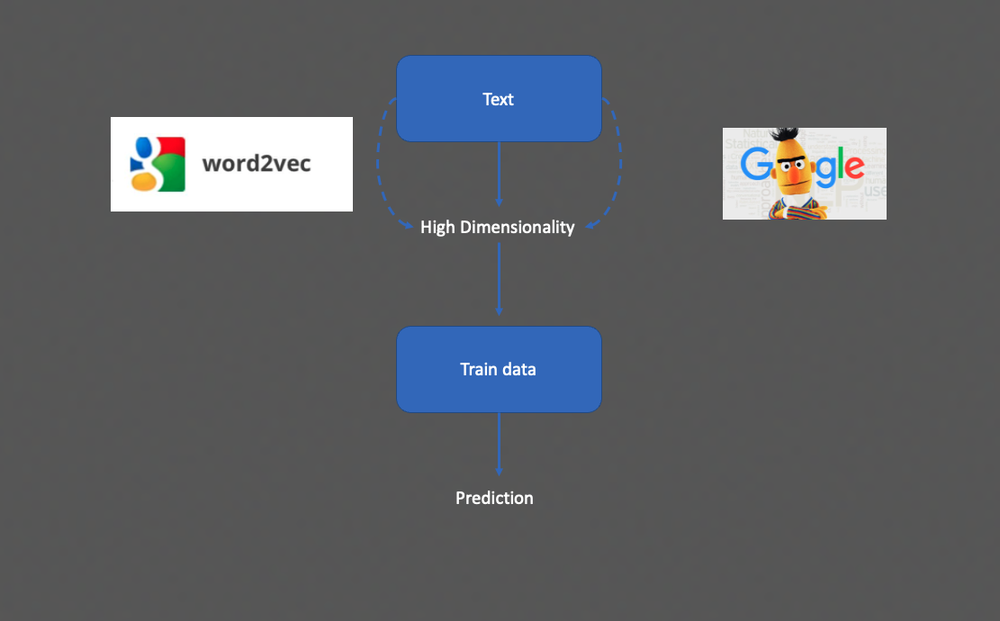

"Online and Offline protest participation: An Empirical Analysis for the 2020 Black Lives Matter Movement"
--Work in Progress--
On May 25, 2020, George Floyd, a 46 years old black man was arrested in Minneapolis. During the arrest, the police officer Derek Chauvin immobilized George placing his knee on George’s neck for more than 8 minutes, ignoring his complaints about not being able to breath. Floyd was pronounced death an hour later after being transferred to an emergency center. Images of the incident rapidly circulated through social media and protests against police brutality and racism expanded worldwide in which it would soon became the ”the largest movement in the country’s (US) history” (Buchanan Larry , Bui Quoctrung, 2020), with more than 15 million estimated participants. The protests revived the already existing Black Lives Matter (BLM) organization. From Los Angeles Police Department $150 million budget cuts to the newly Black Lives Matter plaza, the list of accomplishments in light of the uprising is plentiful. The BLM protests planted the seed for a new era in online activism (e-activism). A historical maximum of nearly 9 million users tweeted about the movement during the protest days.
How does protesting behavior interact with the underlying Twitter’s social networks?
The main difficulty to tackle this question is the absence of data
that comprises both physical protest participation and online activity.
I present a unique dataset of Twitter users that attended some of the Black Lives Matter's denmostrations in the US.
I used Twitter’s API v.2 under the Academic Research license to obtain my Twitter’s dataset. This newly created track warrants access to historical and global data for non-commercial use. All the data collection was done with the twarc2 Python function. Needless to say,
all this data colelction is subject to strict confidentiality issues and only made for research purposes.
Let's see how to identify protesters from Twitter data.
The hard problem of tracking protesters:
Twitter provides very handy metadata that might include geolocation information, time of tweeting, media attachments etc.
Intuitively, it might seem that combining the aforementioned characteristics and filtering by the time and place a protest
was taking place can be enough to track attendees. Let me show you why this is error prone.
Consider the two tweets shown below (instagram posts linked to Twitter), both correspond to the same city (L.A) and time that the BLM marches were occuring.
Whereas the top one clearly corresponds to a participant, we can humanly see that the second user was at home.


These sort of "errors" are indeed very common and make metadata filters over estimate the number of users.
Can we build an automated method that solves this?
Combining text analysis with machine learning, I am able to train a prediction algorithm that
understands the way that users communicate that they are on the streets.
You can find more details about the methodology in the pdf of the paper but let me briefly mention
how do these models operate.

We feed that tweet's text to these algorithms. However, text itself can't be masured with maths.
The different ML architectures transform words to (high dimensional) vectors that preserve similarity
according to their semantic meaning.
I tried different architerctures ranging from the simplest Word2Vec model to SOTA models such as BERT.
Simply put, this process created an algorithm which can predict whether a particular tweet's text
corresponds to a protester or not. This enables me to scale up my dataset without the need for human verification.
Results of the algorithm:
Overall, I have nearly 4M tweets distributed as shown in the first map. To this dataset, I filter those
tweets containing some sort of media attachment. In a nutshell, the classification process is
even hard for the human as one can't tell whether a user is protesting or not just from the tweet's text.
Verifying images and/or videos helps me creating the training dataset although this won't be feed into the algorithm per se.
All in all, I classified a total of 1612 protesters that produced 2181 tweets during the protests' week.
Some descriptive statistics:
The figure below shows the evolution of tweets self-written (i.e. not retweets or mentions) for the two groups, protesters and non-protesters.
Perhaphs surprinsingly, one can see how the George Floyd's killing constituting a sudden break in Twitter activity for both groups. The maximum
number of tweets coincides in both cases with the day with more arrests overall and thus maximum turmoil.

Perhaps more surprinsingly, the evolution of pro-movement hashtags follows similar trends across time:
The same happens for anti-movement hastags ( i.e. #BlueLivesMatter) :